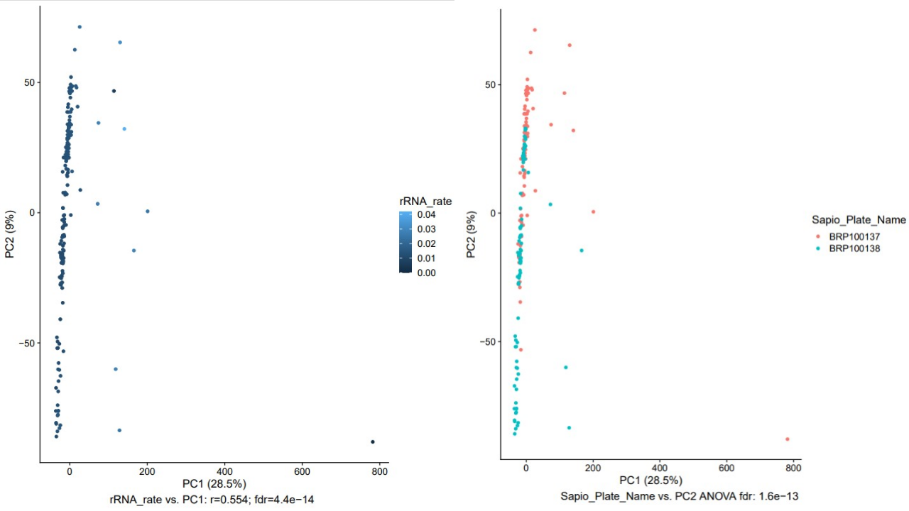
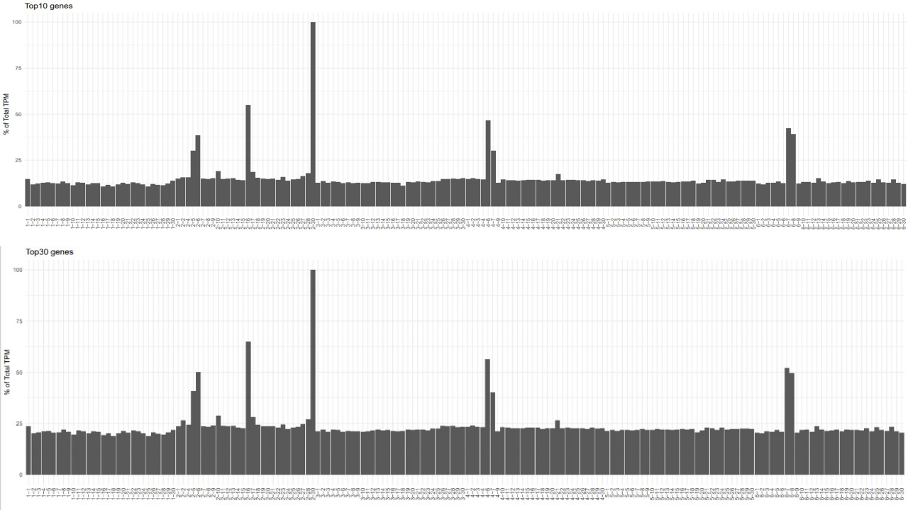
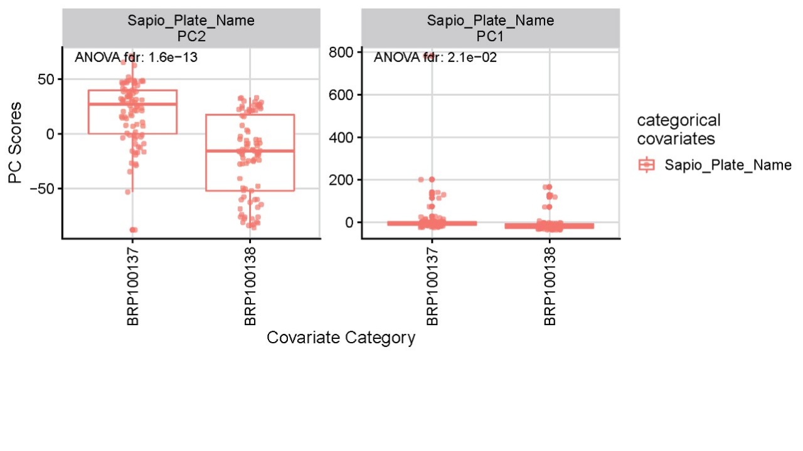
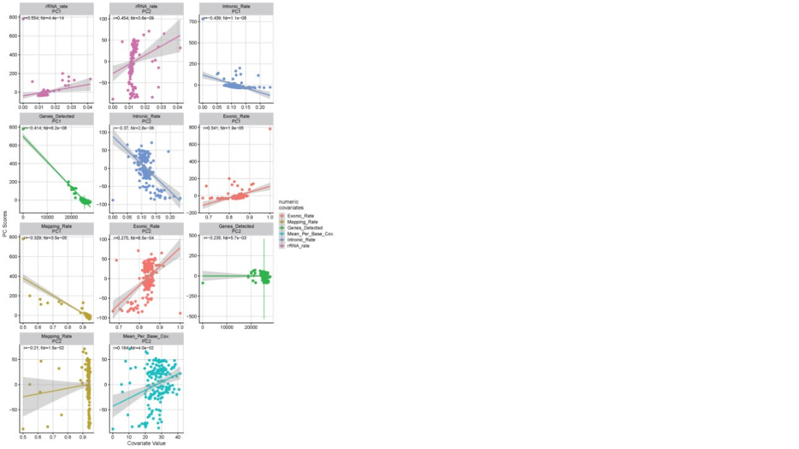

EA Slide Deck
- Press “Esc” or “o” key to enter the the slide overview
- Alt + mouse click to zoom in/out
- Press “s” key to speaker view to see notes
Slide 1
ExpressionAnalysis (EA) is a Converter from DNAnexus output to QuickOmics (http://quickomics.bxgenomics.com) for interactive visualization.
This pipeline contains three main tools:
EAinit: Generate a set of project analysis files based on a DNAnexus result folder;
EAqc: Analyze the covariates against the expression to determine if the expression is needed to be adjusted;
EArun: Produce QuickOmics object for webserver loading.
This pipeline contains three main tools:
EAinit: Generate a set of project analysis files based on a DNAnexus result folder;
EAqc: Analyze the covariates against the expression to determine if the expression is needed to be adjusted;
EArun: Produce QuickOmics object for webserver loading.
PCA plots

sequenceQC_top30

sequenceQC_union25

Significant_Categorical_Covariates

Significant Numeric_Covariates
